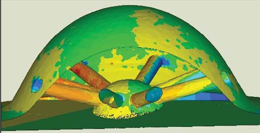

3.5 Sonuçlarýn konvansiyonel tarama cihazlarýnda yapýlan ölçümlerle karþýlaþtýrýlmasý
Sanayide modellemeye yardýmcý olarak en yaygýn ve hassas bir þekilde kullanýlan cihazlar; nokta temaslý koordinat-ölçme tezgahlarý ile optik CCD kameralý veya lazer proplu sayýsallaþtýrýcýlardýr. Örneðin; CAPPSNT Ölçme yazýlýmý vasýtasýyla, COORD3 CMM cihazýndan aktarýlan verilerden faydalanarak, nozulun belirli bölgelerinde kesit profili ölçülmesi iþlemi Þekil 3.8'de gösterilmektedir. Bu operasyon esnasýnda, öncelikle parça belli referans noktalarý ve düzlemlerine göre doðrultulmuþtur. Daha sonra verilen yön ve aralýkta, x ekseni boyunca y eksenine paralel taramalar gerçekleþtirilmiþtir. Böylece, CAD programýnda simetri eksenine göre çizilen eðrilerden yola çýkarak parçanýn yüzey modellemesi bilinen tekniklerle tamamlanmýþtýr. Motor faný için Bölüm 3.4'te alýnan netice, yukarýda bahsedilen yöntemle tasarlanan bir "mastar" model ve özellikle medikal alanda sýklýkla kullanýlan MIMICS (www.materialise.com) yazýlýmýndan alýnan sonuçla mukayese edilmiþ ve ortaya çýkan sapma Tablo 3.2'de açýklanmýþtýr.
Mevcut imkanlarla yapýlan bu çalýþmada; profesyonel programlardan alýnanlara benzer sonuçlar elde edilmiþtir. Bununla beraber, mm mertebesinde sapmalar görülmesinin sebepleri arasýnda; klinik tomografik görüntülerin endüstriyel anlamda yeterince hassas elde edilememiþ olmasý dolayýsýyla, görüntü iþleme esnasýndaki kayýplar ve CAD modelleme için transfer edilen bazý konturlardaki þekil bozukluklarý sayýlabilir.
Þekil 3.8 Nokta temaslý CMM ile muhtelif kesit profilleri taranmýþ nozul
Tablo 3.2 Uygulama çalýþmasý ile mevcut programlardan elde edilen sonuçlarýn karþýlaþtýrýlmasý
| Fana ait kritik çap deðerleri |
COORD3 & CAPPS CMM'den alýnan veriler |
Örnek çalýþma neticesi |
MIMICS ile ölçülen |
Mil yataðý çapý |
40.00 mm |
39.69 mm |
37.66 mm |
Rulman yuvasý çapý |
60.00 mm |
59.87 mm |
59.15 mm |
Kanat ucu çapý |
145.00 mm |
146.13 mm |
146.21 mm |
MIMICS doðrudan "dicom" formatýndaki tomografi görüntülerini hýzlý bir þekilde analiz edip, STL formatýnda üçgen poligon yüzeyler örerek CAD programlarýna yollayabilmektedir (Þekil 3.9 ve Þekil 3.10). Geometrik boyut tamlýðýnýn yaný sýra, form uyumu açýsýndan köþe radyuslarý ve faturalý bölgelerde, tarama sýklýðý detaylarýn belirginleþmesinde büyük rol oynamaktadýr. Dokunmalý CMM cihazlarý propun inceliði mertebesinde yüzeyden veri toplayabilmektedir. Bununla beraber yapýlan uygulama ile; dýþtan görülemeyen iç yüzeylerdeki yada ters açýlý yüzeylerdeki ölçümlerde, bir tahribatsýz bir ölçme tekniði olan tomografik görüntüleme sisteminin bu sahada rakipsiz olduðu gösterilmiþtir. Böylece, bu verilerden yola çýkýlarak RP (hýzlý prototipleme) ve CAM (bilgisayar destekli imalat) aþamalarýna kolaylýkla geçilebilmektedir.
Þekil 3.9 MIMICS programýnda, fanýn tomografik kesitleri ve 3D görüntüsü
Þekil 3.10 Fan parçasýnýn, Mimics'ten alýnan STL datasý üzerindeki kritik çaplar
Sonuç
Tasarým mühendisleri gün geçtikçe karmaþýklaþan makine parçalarýnýn modellenmesinde, CMM ve tarayýcýlarýnýn yetersiz kaldýðý yerlerde endüstriyel CT cihazlarýna gerek duymaktadýrlar. Örneðin yurtdýþýnda yapýlmýþ çalýþmalardan yola çýkarak; bir motor bloðunu konvansiyonel metotlarla ölçüp tasarlamak bir hafta sürebiliyorken; endüstriyel bir tomografiden faydalanarak CAD çizimini elde etmenin bir gün gibi çok kýsa sürede bitirilebileceðini rahatlýkla söyleyebiliriz. Bununla birlikte çok geniþ karoseri gövdelerinin tasarýmýnda ve kalite kontrolünde CMM'ler ehemmiyetini korumaya devam edecektir. Yurtiçinde makul maliyetlere düþen CMM cihazlarýna, artýk her tasarým bürosunda ve KOBÝ atölyelerinde rastlayabilmekteyiz. Oysa CT tarayýcýlarýnýn maliyeti ayný ebatta bir tam otomatik bir CMM'ye nazaran 5 kat daha pahalýdýr. Buna raðmen, imalatta verimli çalýþmaya getireceði katkýlardan ötürü, ülkemizde de önümüzdeki 10 sene içerisinde belli baþlý AR-GE laboratuarlarýnda yüksek teknolojiye sahip CT sistemlerinin hizmet vereceðini inanýyorum.
Bundan sonra yapýlacak araþtýrmalara bir basamak oluþturacaðýný düþündüðümüz bu çalýþma vasýtasýyla; yaygýn olarak kullanýlan bir görüntü iþleme yazýlýmý ve pratik bir bilgisayar programlama dilinden yola çýkarak basitçe raster görüntüden vektörel geometriye nasýl geçilebildiðine dair bir yaklaþým getirilmiþtir. Yapýlan uygulamalarda mevcut tersine mühendislik yazýlýmlarýna nazaran boyut tamlýðýnda daha iyi neticeler alýnmakla birlikte, iþlem süresi ve fonksiyonellik açýsýndan düzenlenmesi ve geliþtirilmesi gereken birçok husus bulunmaktadýr. Türkiye'de yerli CAD yazýlýmý yapan merkezler çoðalmasýna paralel olarak, piyasada sýklýkla adý geçen tersine mühendislik programlarýna benzer ve hatta onlarýn eksik yönlerini tamamlayabilecek yazýlýmlarýn, yakýn gelecekte bilgisayarlardaki yerini alacaðýný ümit ediyorum...
Kaynaklar:
Dennis, M. J., (1992), "Industrial Computed Tomography", Non-Destructive Evaluation and Quality Control, ASM Handbook Vol.17: 358-386.
Martz, H. E. ve Schneberk, D., (2001), "Industrial Computed Tomographic Imaging", Advanced Signal Processing Handbook, CRC Press, USA.
Uslu, Ü., (2006), Tomografik Görüntü Verilerinden 3-Boyutlu CAD Modelinin Oluþturulmasý, Yüksek Lisans Tezi, Y.T.Ü. Fen Bilimleri Enstitüsü.
Ekler
Birkaç CT üreticisi ve uygulama örnekleri-1
Birkaç CT üreticisi ve uygulama örnekleri-2

|